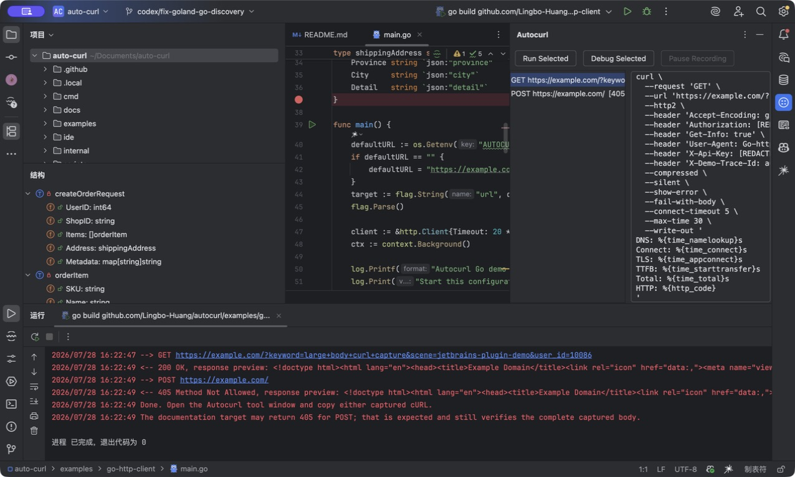

01 · JetBrains
Complete Java POST
Capture HTTP/2, redacted headers, and a deeply nested JSON body.
Capture the outbound request your code actually sent—headers, nested body and protocol—inside your IDE. No SDK. No system proxy.
GoJavaPythonNode.js HTTP/1.1HTTP/2gRPCWebSocket

Start an existing Run or Debug configuration.
It observes the exact outbound request from this process.
Select a request and copy the complete cURL.
curl \
--request 'GET' \
--url 'https://api.example.com/v1/users?active=true' \
--http2 \
--header 'Accept: application/json' \
--header 'Authorization: [REDACTED]'Real workflows · no application changes
Seven short, uncut demonstrations across JetBrains IDEs, VS Code, and Cursor. Videos load only when you press play.
Capture HTTP/2, redacted headers, and a deeply nested JSON body.
Start Node.js Debug normally; the request appears without a separate CLI command.
Generate a replayable cURL before the request is sent.
Keep mTLS, pinned, domain, IP, and CIDR destinations end-to-end.
See why Proxy:nil is invisible, then capture with an explicit process proxy.
A Compound config cannot expose environment variables; a Python config can.
An existing process stays untouched; a fresh Debug launch is captured.
Headers, nested JSON bodies, query parameters and protocol details stay together.
RuntimesGoJavaPythonNode.js
ProtocolsHTTP/1.1HTTP/2gRPCWebSocket
IDEsJetBrainsVS CodeCursor
Autocurl creates a temporary proxy session only for the Run or Debug process you choose.
Safe mode preserves end-to-end TLS for incompatible targets. Bypass mTLS, certificate-pinned, internal infrastructure, domain, IP, or CIDR destinations without breaking the rest of the session.
# Keep infrastructure direct
autocurl run --all \
--bypass 10.0.0.0/8 \
-- go run .The local capture engine and individual IDE workflow stay open source under MIT.
Teams need more than a cURL: shared redaction policies, workspace presets, self-hosted distribution, and support.
redact:
- Authorization
- Cookie
preserve:
- Content-TypeBring consistent capture, redaction, and distribution to your engineering workflow.
# workspace-policy.yml
redact:
- Authorization
- Cookie
- X-Api-Key
preserve:
- Accept
- Content-Type
- User-AgentInstall Autocurl, run an existing configuration, and copy the request your code actually sent.